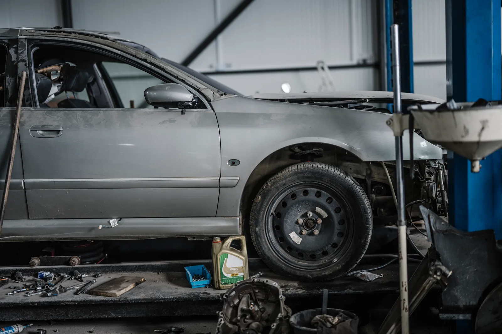
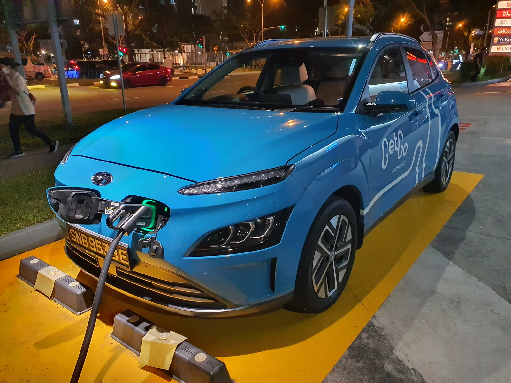

▲ 무상보증 기간과 대상 부품은 브랜드마다 기준이 다르다 ⓒ Wikimedia Commons
주행거리 5만km, 아직 보증기간 안이라고 생각했는데 정비소에서 '유상 수리'라는 답을 들은 적 있을 것이다.
이유는 대개 단순하다. 보증 대상이 아닌 부품이었거나, 일반보증은 끝났지만 파워트레인보증은 남은 애매한 구간이었거나, 혹은 반대로 기간은 남았는데 주행거리가 기준을 넘긴 경우다. 국산·수입 가리지 않고 브랜드마다, 심지어 같은 브랜드라도 차종·파워트레인별로 보증 기준이 제각각이라 헷갈리기 쉽다.
1. 무상보증, 정확히 무엇을 보장하나
신차 보증은 보통 한 가지가 아니라 여러 층으로 겹쳐 있다. 이 구조를 모르면 '보증기간 안인데 왜 유상이냐'는 오해가 생긴다.
| 구분 | 대상 | 국산차 통상 기준 |
|---|---|---|
| 일반보증 | 차체·도장·전장품 등 대부분의 부품 | 3년 또는 6만km |
| 파워트레인보증 | 엔진, 변속기, 동력전달장치 등 핵심 구동 부품 | 5년 또는 10만km |
| 배출가스 관련 부품보증 | 촉매변환장치, ECU 등 배출가스 제어 부품 | 7년 또는 12만km 안팎(브랜드별 상이) |
| EV 배터리보증 | 구동용 고전압 배터리 | 8~10년 또는 16만~20만km |
📍 '기간 또는 거리 중 먼저 도래하는 것' 원칙
거의 모든 제조사가 보증 기간과 주행거리 중 먼저 도달하는 쪽을 만료 기준으로 삼는다. 예를 들어 일반보증이 3년/6만km라면, 등록 2년 차에 6만km를 넘기면 그 시점에 일반보증이 끝난다. 반대로 3년을 채워도 주행거리가 짧으면 3년 시점에 끝난다. 보증기간은 신차 판매(등록)일부터 기산되며, 정비 이력·점검 주기를 지키지 않으면 보증이 제한될 수 있다.
내 차의 정확한 보증 잔여 기간은 차대번호(VIN)를 기준으로 제조사 공식 채널에서 조회하는 것이 가장 정확하다.
현대차 기준 모델별 보증기간은 공식 페이지에서 확인할 수 있다. 현대자동차 보증기간 안내 바로가기
2. 국산차 브랜드별 무상보증 비교
같은 국산차라도 브랜드별로, 또 하이브리드·전기차 여부에 따라 보증 기준이 갈린다. 2026년 기준으로 정리하면 다음과 같다.
| 브랜드 | 일반보증 | 파워트레인보증 | 비고 |
|---|---|---|---|
| 현대 | 3년/6만km | 5년/10만km (하이브리드 10년/20만km) | 하이브리드 고전압배터리는 최초 구매자 한정 평생보증 |
| 기아 | 3년/6만km | 5년/10만km | 액세서리(데칼·필름류)는 1년/2만km로 별도 제한 |
| 제네시스 | 5년/10만km | 5년/10만km | 배출가스 관련 부품(촉매·ECU 등) 7년/12만km |
| 쉐보레 | 3년/6만km | 5년/10만km | EV 모델은 별도 배터리보증 적용 |
| KGM(구 쌍용) | 3년/6만km (연장 시 5년/10만km) | 5년/10만km | 하이브리드 시스템·배터리 10년/20만km 특별보증 |

▲ 신차 보증은 출고(등록)일부터 계산이 시작된다 ⓒ Wikimedia Commons
✅ 국산차 보증 확인 시 체크할 것
· 일반보증(3년/6만km)과 파워트레인보증(5년/10만km)의 기간이 다르다 — 같은 차라도 부품에 따라 적용 시점이 갈림
· 제네시스는 일반보증부터 5년/10만km로 다른 국산 브랜드보다 길게 잡혀 있음
· KGM은 기본 3년/6만km + 무상 연장분 2년/4만km로 총 5년/10만km 체계 — 연장 조건은 모델·시기별로 다를 수 있어 공식 채널 재확인 필요
· 하이브리드 차량의 고전압 배터리 평생보증은 대개 '최초 구매자'에 한정 — 중고 취득 시 승계되지 않는 경우가 있어 반드시 확인
3. 수입차 브랜드별 무상보증 비교
수입차는 국산차보다 일반보증 거리 기준이 넉넉한 대신, 기간 자체는 짧게 잡힌 곳도 있다. 프로모션으로 한시적으로 보증을 연장하는 경우도 있어 구매 시점의 공지를 함께 확인해야 한다.
| 브랜드 | 일반보증 | 비고 |
|---|---|---|
| BMW | 3년/10만km | 방청(차체 부식)보증 12년 별도 적용 |
| 메르세데스-벤츠 | 2년/주행거리 무제한 | 유상 연장보증 프로그램 선택 가입 가능 |
| 아우디 | 3년/10만km | 방청보증 12년 별도 적용 |
| 볼보 | 5년/10만km(파워트레인 기준) | 2026년 9월 한시 프로모션으로 하이브리드 모델 한정 7년/14만km 무상 연장 사례 있음 |
| 렉서스 | 4년/10만km | 하이브리드 시스템 5년/10만km, 하이브리드 배터리 8년/16만km |
| 토요타 | 모델별 상이(공식 페이지 확인) | 고전압 배터리 최대 10년/20만km 수준까지 적용되는 모델 있음 |
📍 프로모션성 보증 연장은 '한시적'일 수 있다
볼보코리아의 하이브리드 파워트레인 7년/14만km 연장처럼, 특정 월 출고분에만 적용되는 한시 프로모션이 종종 나온다. 이런 조건은 계약서·판매 조건표에 명시되는지 반드시 확인하고, 구두 안내만 믿지 않는 것이 안전하다.
토요타 모델별 정확한 보증 조건은 공식 페이지에서 확인할 수 있다. 토요타코리아 보증 안내 바로가기
4. 전기차 배터리 보증 — 봐야 할 숫자는 두 개다
전기차 배터리보증은 '기간·거리'뿐 아니라 '성능 기준'까지 같이 봐야 한다. 배터리는 시간이 지나면 자연스럽게 용량이 줄어드는 소모성 특성이 있어서, 제조사들은 대개 정해진 성능(보통 70%) 이하로 떨어졌을 때만 무상 교체·수리를 해준다.
| 모델/브랜드 | 배터리보증 |
|---|---|
| 현대 아이오닉 일렉트릭/아이오닉6 | 10년/20만km |
| 기아 EV6·EV9 | 8년/16만km |
| 제네시스 GV60·일렉트리파이드 GV70·G80 | 10년/20만km |
| KGM 토레스 EVX | 업계 최장 수준(공식 채널 재확인 권장) |
| 렉서스 하이브리드 배터리 | 8년/16만km |

▲ 전기차 배터리보증은 기간·거리뿐 아니라 성능 저하 기준(대개 70%)까지 함께 확인해야 한다 ⓒ Wikimedia Commons
✅ EV 배터리보증에서 놓치기 쉬운 것
· '8년/16만km'라는 숫자만 보고 안심하면 안 된다 — 실제 교체는 성능이 기준치(보통 70%) 아래로 떨어졌을 때만 적용
· 완속·급속 충전 방식, 충전 습관에 따라 배터리 열화 속도가 달라질 수 있어 보증과 별개로 관리가 중요
· 배터리보증 잔여기간은 제조사 앱이나 고객센터에서 차대번호로 조회 가능한 경우가 많음
5. 소모품은 보증 제외 — 중고차 사면 잔여 보증은 승계될까
보증기간 안이라고 모든 부품이 무상은 아니다. 정상적으로 마모되는 소모품은 대부분 제외 대상이다.
⚠️ 대표적인 보증 제외(소모품) 항목
· 타이어, 브레이크 패드·라이닝, 와이퍼 블레이드
· 12V 보조배터리, 전구·퓨즈, 벨트류
· 도장·필름·데칼 등 일부 액세서리(브랜드에 따라 1년/2만km 등 별도 단기 보증)
· 사용자 과실·사고·개조로 인한 손상, 순정부품이 아닌 부품 장착으로 인한 고장
중고차를 살 때 가장 궁금한 부분은 '남은 보증이 나에게도 적용되는가'다.
📍 원칙은 '사람'이 아니라 '차'를 따라간다
국내 완성차 업계의 일반적인 신차 보증은 소유자가 아니라 차량(차대번호)에 귀속되는 구조다. 따라서 기간·주행거리 조건이 남아 있다면, 중고로 구매한 새 소유자에게도 잔여 보증이 그대로 승계되는 것이 원칙이다. 다만 별도로 유상 가입하는 연장보증 상품은 약관에 따라 승계 가능 여부·수수료가 다를 수 있어 반드시 확인이 필요하다.
▲ 중고차 구매 시에는 계약 전 차대번호로 잔여 보증 기간과 승계 조건을 직접 조회하는 것이 안전하다 ⓒ Wikimedia Commons
✅ 중고차 구매 전 보증 관련 체크리스트
· 차대번호(VIN)로 제조사 공식 채널·고객센터에서 일반보증·파워트레인보증·EV 배터리보증의 잔여 기간과 거리를 각각 조회
· 정비 이력·정기 점검 기록이 온전히 남아 있는지 확인 — 관리 소홀은 보증 거절 사유가 될 수 있음
· 판매자가 안내하는 유상 연장보증(플러스케어 등)의 승계 조건과 잔여 횟수를 별도 확인
· 계약서에 보증 관련 특약이 있다면 반드시 명시해 둘 것
소비자와 사업자 간 일반적인 분쟁 해결 원칙은 공정거래위원회 산하 소비자분쟁해결기준에서 확인할 수 있다. 소비자분쟁해결기준 바로가기
6. 요약
신차 보증은 한 덩어리가 아니라 일반보증·파워트레인보증·EV 배터리보증 등 여러 층으로 나뉘어 있고, 기간과 주행거리 중 먼저 도래하는 쪽이 만료 기준이 된다. 국산차는 대체로 일반 3년/6만km, 파워트레인 5년/10만km가 기본이며 제네시스는 일반보증부터 5년/10만km로 더 길다.
수입차는 브랜드별 편차가 크다. BMW·아우디는 3년/10만km, 벤츠는 2년/무제한거리가 기본이고, 볼보·렉서스처럼 프로모션이나 하이브리드 여부에 따라 조건이 달라지는 경우도 많다. 전기차 배터리는 8~10년/16만~20만km 보증이 일반적이지만, 성능이 기준치 아래로 떨어져야 적용된다는 점을 놓치지 말아야 한다.
타이어·브레이크 패드 같은 소모품은 대부분 보증 대상이 아니며, 중고차로 사더라도 잔여 보증은 원칙적으로 차량 기준으로 승계된다. 다만 구매 전 차대번호로 잔여 보증을 직접 조회하고, 유상 연장보증의 승계 조건은 별도로 확인하는 것이 가장 확실하다.